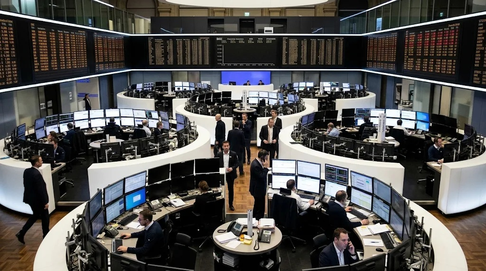

European Earnings Growth Hits Four-Year High, but Energy Sector Does Much of the Heavy Lifting
Third-quarter profits across the STOXX Europe 600 are forecast to rise 25% year on year, though growth outside the energy sector slows to a more moderate 10%.

European companies are heading toward their strongest quarterly earnings growth in four years, with third-quarter profits across the STOXX Europe 600 expected to rise by 25% year on year. The latest estimate points to a stronger reporting season than investors had anticipated, although the headline figure conceals a significant gap between the energy sector and the rest of the market.
The forecast, based on results from 265 companies and estimates for those yet to report, was compiled using LSEG I/B/E/S data. Energy companies are expected to record an almost 151% increase in profits, making the sector the largest contributor to the aggregate growth rate. Excluding energy, earnings across the index are projected to increase by 10%, up from the previous week's estimate of 9.5%.
The distinction matters. A 25% increase across the index suggests a powerful recovery in corporate profitability, but the more moderate figure outside energy provides a clearer indication of how broadly that recovery is spreading.
Energy drives the headline number
The energy sector's contribution reflects a combination of market conditions and company-specific performance. Higher energy prices and stronger refining margins have supported the results of major European oil and gas companies. Earlier in the reporting season, Shell and TotalEnergies reported their highest quarterly profits since 2022, benefiting from improved trading conditions and elevated refining margins.
That performance has lifted the overall index estimate. However, energy earnings can be particularly sensitive to commodity prices, refining spreads and geopolitical developments. A sharp increase in one quarter does not necessarily indicate that the same pace of growth can continue.
For investors, the difference between reported profit growth and its underlying drivers is important. A company benefiting from a temporary improvement in commodity markets may face a different outlook from an industrial or technology business expanding through higher demand and productivity gains.
The figures outside energy are more restrained but still positive. Expected earnings growth of 10% suggests that European corporate profitability is improving beyond the companies directly exposed to oil and gas markets. It also represents an improvement from the previous week's estimate.
Revenue growth offers another perspective
Third-quarter revenue across STOXX 600 companies is expected to increase by 12%. Excluding energy, the forecast falls to 7%.
The gap between revenue and earnings growth can reflect changes in margins, costs, business mix and operating efficiency. When profits rise faster than sales, investors often examine whether companies are benefiting from better cost control or improved pricing power. Those gains can support valuations, but they may become harder to maintain if input costs rise or demand weakens.
The figures also show why aggregate earnings estimates should not be treated as a complete measure of economic strength. Revenue growth outside energy is positive, but it remains below the index-wide figure. Companies in different sectors are operating under different demand conditions, and the reporting season is not delivering the same outcome everywhere.
Some industries have faced more difficult comparisons and weaker demand. Earlier estimates showed that basic materials and consumer-related companies were among the areas where results had disappointed relative to expectations. This unevenness is a reminder that a strong index-level number can coexist with pressure in individual industries.
AI investment and public spending support the outlook
Beyond energy, analysts have pointed to several sources of support for European corporate earnings. UBS analysts have highlighted the expansion of artificial intelligence, fiscal spending and consumer trends as factors contributing to the current momentum. They also see the possibility that these drivers could remain relevant into 2027.
AI investment has implications beyond companies directly producing chips or software, where corporate buyers increasingly evaluate AI inference costs alongside infrastructure utilization. Demand for data centres, power infrastructure, industrial equipment, cooling systems and network capacity can create opportunities for a wider range of European businesses. Industrial suppliers may benefit as technology companies and governments invest in the physical infrastructure required to expand computing capacity.
Government spending can also support selected industries, particularly those connected to infrastructure, defence and electrification. However, the effect is unlikely to be uniform. Companies that win contracts or supply essential equipment may benefit, while businesses exposed to weaker consumer demand or higher financing costs could continue to face pressure.
The consumer outlook remains another important variable. Household spending influences retailers, travel companies, automakers and a broad range of service providers. If consumers remain cautious, companies may struggle to convert improving economic conditions into stronger sales.
Market reaction and the next reporting tests
European shares reached a record high during the week, supported by the strong earnings season, a recent decline in energy prices and a rotation away from some AI-linked stocks in Asia and the United States. Individual company results also influenced trading.
Siemens gained after raising its medium-term growth outlook, while staffing group Adecco advanced following stronger-than-expected quarterly operating profit. These moves illustrate how company-specific guidance can matter as much as headline index estimates. Investors are looking not only at what businesses earned in the latest quarter, but also at whether management teams expect those conditions to continue.
The next group of results will provide another test of the earnings recovery. French train manufacturer Alstom is among the companies scheduled to report in the following week, alongside other STOXX 600 constituents. Investors will be watching for evidence that industrial demand, order books and profitability are holding up.
What investors should watch
The 25% earnings-growth forecast is a strong headline, but it should be read alongside the 10% estimate excluding energy, much as investors examine infrastructure utilization and full operating costs when separating headline gains from durable efficiency. The latter provides a more balanced view of the broader corporate environment.
Several questions remain important: whether energy profits can sustain their contribution, whether revenue growth outside the sector can accelerate, and whether companies can protect margins as costs and demand conditions change. Investors will also need to distinguish between growth driven by durable investment trends and gains that depend on temporary market conditions.
For now, the STOXX 600 reporting season points to a meaningful improvement in European corporate profitability. Yet the strength of the headline figure should not obscure the uneven nature of the recovery. The next phase will depend on whether more sectors can contribute consistently, rather than relying on energy to carry the index.